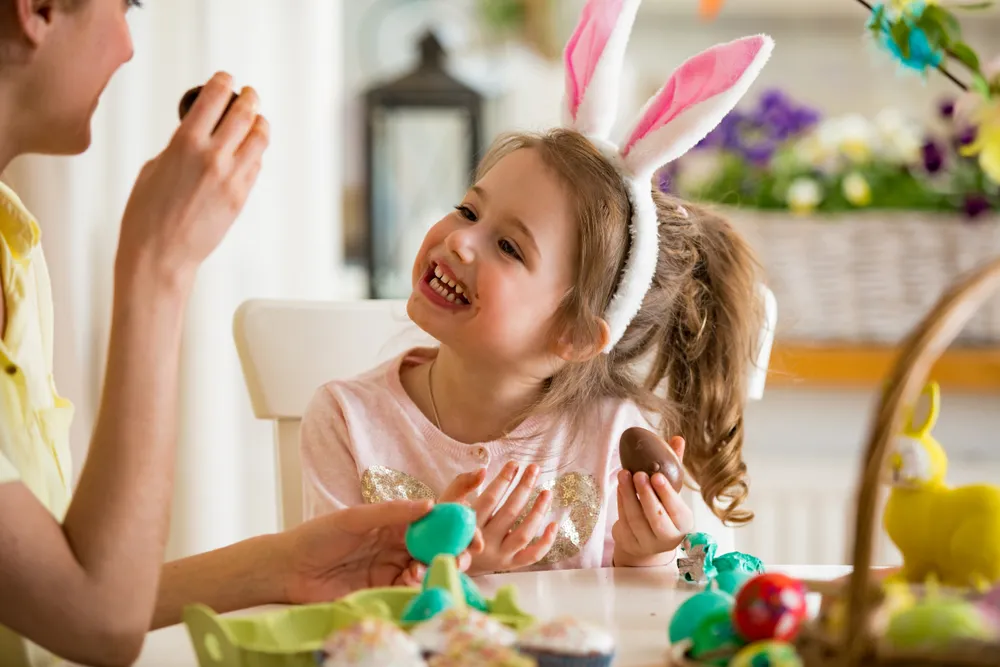

How to Avoid an Easter Sugar Binge

What parent doesn’t dread the sugar-infused mayhem that follows an Easter egg hunt? Well never fear the bunny and his basket of goodies because we’ve got ten tried and true ways to prevent those candy-filled temper tantrums and the irritable blood sugar crashes that inevitably put an end to an otherwise enjoyable family holiday.
Ban Candy with Added Dyes and Color
It’s often not the sugar that causes behavioral issues in kids, like temper tantrums, it’s the food dyes and added food coloring that kids might have an extreme reaction to. So instead, try having a limited supply of healthier treats on hand. Some great healthier alternatives include homemade rice crispy squares, homemade fudge, and organic and dark chocolate—instead of processed junk.
Better yet, encourage your kids to join in on the fun and have them take part in making their Easter treats. They’ll enjoy getting creative in the kitchen, and you’ll enjoy the memories!
Set Ground Rules
Parents should have a frank and honest discussion with kids before the Easter egg hunt to talk about just how much candy they want vs. how much they need. Make them a part of the decision and ask them honestly how they felt ill after gorging themselves with candy the previous Easter.
Educating your children at a young age can help them make informed decisions later in life and instills healthy eating habits early on too! Having discussions about the “why” instead of saying “because I said so” can help them better understand your rules.
Prime Them with a Balanced Meal
Offer a balanced breakfast or lunch before they strike out to hunt for treats. This way those little bodies won’t be so apt to experience a blood sugar spike followed by the inevitable sugar crash. Eating a healthy meal beforehand may also help prevent sugar cravings and overeating candy later in the day.
Flush Out Excess Sugar
Be sure to take a case of bottled water with you to the in-laws or Easter party so you can flush out excess sugars by hydrating them adequately. Plus, if they’re running around on their Easter egg hunt, providing ample water can help them stay hydrated . After all, water plays a vital role in improving your mood, cognition, body temperature and it helps your organs function properly too.
Don’t Give Out Candy
Another easy way to avoid an Easter sugar binge is to start a new holiday tradition of giving out small toys in your kids’ Easter baskets instead of candy. Your kids will love the small gifts and might not even notice that candy is missing!
You could even consider adding in a few toys for fun or things they’re interested in, as well as a few educational toys (such as a book or puzzles) too. A new Easter outfit or pair of shoes makes a great gift too!
Educate on Healthy Food Choices
Kids are smart, they don’t want to feel ill, so talk to them about how to balance treats with healthier choices and why alternatives are better options for them. As mentioned earlier, it’s never too early to start educating your children on healthy eating habits. Starting them young will help them stick to healthy habits later in life.
You could watch an educational video together, read a book, or simply have a discussion on healthy food choices.
Make Your Own Candy
A great way to skip the sugar crash is to make your own Easter candies and eggs! Swap out refined sugar with natural sweeteners, such as stevia, honey, and maple syrup for a healthier (but still satisfying!) treat. There are tons of healthy recipes available, simply search online.
Smaller Loot Bags vs. Baskets
Does a small child really need a heaping basket of Easter candy? No, but a small loot bag filled with a half dozen or so treats is a good compromise. This simple yet effective swap might be all you need to help prevent an Easter sugar binge!
Get creative and make the loot bag look like a bunny. You could even use a plain brown paper bag and turn it into an activity, allowing your child to decorate their easter bag with markers, stickers, and glitter. The options are truly endless!
Teach Sharing
If you have more than one child in your family, make one Easter basket and have the kids share the loot among the group. Sharing is not only an important lesson to learn at a young age, but it may help prevent your child from eating too many candies too.
Trade For Favorites
If your child loves chocolate Easter eggs but doesn’t really enjoy marshmallow peeps, teach them about trading for their favorites. You can also teach them about the importance of rationing out their favorite treats. Explaining how they can ration their treats over the course of the next few months rather than eating it all at once is an important lesson to learn and it may help prevent binge eating.
Looking for other ways to keep kids healthy? Check out these articles:
- The 10 Worst Foods to Feed Your Children
- The 10 Best Brain Foods for Your Budding Genius
- 11 Essential Nutrients Every Child Needs
Source: https://activebeat.com/your-health/children/10-effective-ways-to-prevent-an-easter-sugar-binge/